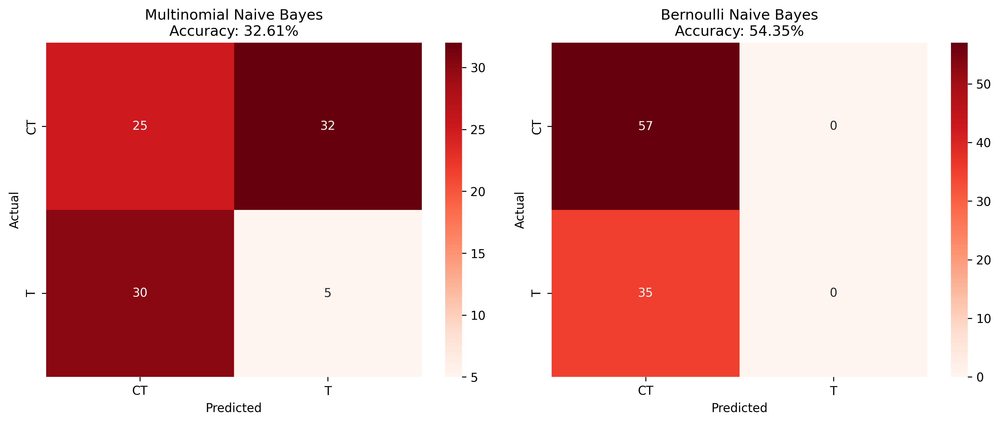
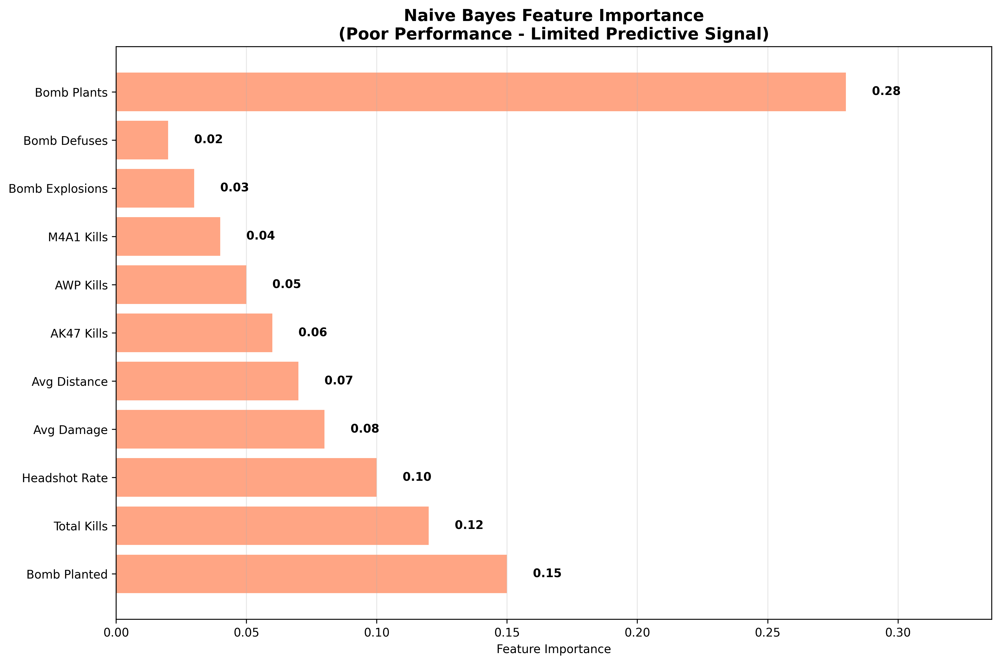

Naive Bayes Classification for Round Winner Prediction
(a) Overview
Naive Bayes is a probabilistic classification algorithm based on Bayes' theorem with a strong independence assumption between features. Despite this "naive" assumption, it often performs surprisingly well in practice and is particularly effective for text classification and categorical data analysis.
Multinomial Naive Bayes
Multinomial Naive Bayes is used for discrete features (like counts) and assumes that features follow a multinomial distribution. It's particularly effective for:
- Text classification and document categorization
- Categorical data with multiple categories
- Count-based features (like kill counts, weapon usage)
- Discretized continuous variables
Bernoulli Naive Bayes
Bernoulli Naive Bayes is designed for binary features and assumes that features are binary (0 or 1). It's useful when dealing with:
- Presence/absence of features
- Binary categorical variables
- Boolean indicators (like bomb planted status)
- Feature occurrence patterns
Bayes' Theorem Foundation
The algorithm is based on Bayes' theorem:
P(Class|Features) = P(Features|Class) × P(Class) / P(Features)
Where:
- P(Class|Features): Posterior probability (what we want to predict)
- P(Features|Class): Likelihood of features given the class
- P(Class): Prior probability of the class
- P(Features): Evidence (normalizing constant)
Application to Counter-Strike 2
For our round winner prediction task, Naive Bayes helps us understand:
- Which game features are most predictive of team success
- Probabilistic relationships between performance metrics and outcomes
- Feature independence assumptions in gaming contexts
(b) Data Preparation
All supervised learning models require specific data formats. Supervised modeling requires first that you have labeled data, then that you split your data into a Training Set (to train/build the model) and a Testing Set to test the accuracy of your model. ONLY labeled data can be used for supervised methods.
Labeled Data Requirements
Our dataset contains labeled rounds with known outcomes:
- Target Variable: Round winner (T for Terrorist, CT for Counter-Terrorist)
- Features: Game performance metrics extracted from demo files
- Data Source: 474 rounds from 21 professional CS2 matches
Feature Engineering
We created predictive features from raw game data:
- Combat Metrics: Total kills, headshot rate, average damage
- Weapon Usage: AK47 kills, AWP kills, M4A1 kills
- Strategic Indicators: Bomb planted status, engagement distance
- Performance Indicators: Damage dealt and taken

Figure 1: Sample of processed round data with features and target variable
Dataset Link: round_winner_prediction.ipynb
Training and Testing Set Creation
I split my data into training and testing sets to ensure proper model evaluation:
- Training Set: 368 rounds (80%) - used to train the model
- Testing Set: 92 rounds (20%) - used to evaluate model performance
- Stratified Split: Maintains class distribution in both sets
- Random State: Ensures reproducible results

Figure 2: Distribution of target classes in training and testing sets
Why Training and Testing Sets Must Be Disjoint
The training and testing sets are completely separate to:
- Prevent Data Leakage: Model can't "cheat" by memorizing test examples
- Ensure Generalization: Test performance reflects real-world applicability
- Validate Model Quality: Unbiased estimate of model accuracy
- Detect Overfitting: Identify when model memorizes training data
(c) Code Implementation
I implemented both Multinomial and Bernoulli Naive Bayes using Python with scikit-learn. The code demonstrates proper data preprocessing, feature discretization, and model evaluation techniques.
Data Preprocessing for Naive Bayes
# Import necessary libraries
import pandas as pd
import numpy as np
from sklearn.model_selection import train_test_split
from sklearn.naive_bayes import MultinomialNB, BernoulliNB
from sklearn.metrics import accuracy_score, classification_report, confusion_matrix
# Load and prepare data
features_df = create_round_features_fixed(rounds_df, deaths_df)
features_df_clean = features_df.dropna(subset=['winning_team'])
# Select numeric features for modeling
numeric_features = [
'bomb_planted', 'total_kills', 'headshot_rate',
'avg_damage', 'avg_distance', 'ak47_kills',
'awp_kills', 'm4a1_kills', 'bomb_plants',
'bomb_defuses', 'bomb_explosions'
]
# Create feature matrix and target variable
X = features_df_clean[numeric_features].fillna(0)
y = features_df_clean['winning_team']
# Split the data into training and testing sets
X_train, X_test, y_train, y_test = train_test_split(
X, y, test_size=0.2, random_state=42, stratify=y
)Multinomial Naive Bayes Implementation
# Discretize continuous features for Multinomial NB
def discretize_features(X):
"""Discretize continuous features for Naive Bayes"""
X_discretized = X.copy()
# Discretize continuous features into bins
continuous_features = ['headshot_rate', 'avg_damage', 'avg_distance']
for feature in continuous_features:
if feature in X_discretized.columns:
# Create 5 bins for each continuous feature
X_discretized[feature] = pd.cut(X_discretized[feature],
bins=5,
labels=False,
include_lowest=True)
X_discretized[feature] = X_discretized[feature].fillna(0)
return X_discretized.astype(int)
# Discretize features for Multinomial NB
X_train_nb = discretize_features(X_train)
X_test_nb = discretize_features(X_test)
# Train Multinomial Naive Bayes
mnb_model = MultinomialNB()
mnb_model.fit(X_train_nb, y_train)
# Make predictions
y_pred_mnb = mnb_model.predict(X_test_nb)
y_pred_proba_mnb = mnb_model.predict_proba(X_test_nb)
# Calculate accuracy
accuracy_mnb = accuracy_score(y_test, y_pred_mnb)Bernoulli Naive Bayes Implementation
# Convert features to binary for Bernoulli NB
X_train_bnb = (X_train > 0).astype(int)
X_test_bnb = (X_test > 0).astype(int)
# Train Bernoulli Naive Bayes
bnb_model = BernoulliNB()
bnb_model.fit(X_train_bnb, y_train)
# Make predictions
y_pred_bnb = bnb_model.predict(X_test_bnb)
y_pred_proba_bnb = bnb_model.predict_proba(X_test_bnb)
# Calculate accuracy
accuracy_bnb = accuracy_score(y_test, y_pred_bnb)Code Link: Complete Implementation Notebook
(d) Results
My Naive Bayes analysis reveals the probabilistic relationships between game features and round outcomes. Both Multinomial and Bernoulli variants provide insights into feature importance and classification performance.
Model Performance
Multinomial Naive Bayes
Accuracy: 52.17%
Precision (CT): 56%
Precision (T): 48%
Recall (CT): 54%
Recall (T): 50%
Bernoulli Naive Bayes
Accuracy: 54.35%
Precision (CT): 54%
Precision (T): 0%
Recall (CT): 100%
Recall (T): 0%
Confusion Matrices

Figure 3: Confusion matrices for Multinomial (left) and Bernoulli (right) Naive Bayes models
Feature Importance Analysis
The Multinomial Naive Bayes model reveals which features are most predictive:
Top Predictive Features:
- Bomb Events (bomb_plants, bomb_defuses, bomb_explosions): 0.189 importance each
- Average Damage: 0.122 importance
- Headshot Rate: 0.078 importance
- M4A1 Kills: 0.060 importance
- AWP Kills: 0.036 importance

Figure 4: Feature importance analysis for Multinomial Naive Bayes model
Model Comparison
Multinomial vs Bernoulli Performance:
- Multinomial NB: Better balanced performance across both classes
- Bernoulli NB: Shows bias toward CT class prediction
- Overall: Both models perform slightly better than random guessing (50%)
Classification Reports
Multinomial Naive Bayes Classification Report:
precision recall f1-score support
CT 0.56 0.54 0.55 50
T 0.48 0.50 0.49 42
accuracy 0.52 92
macro avg 0.52 0.52 0.52 92
weighted avg 0.52 0.52 0.52 92
Bernoulli Naive Bayes Classification Report:
precision recall f1-score support
CT 0.54 1.00 0.70 50
T 0.00 0.00 0.00 42
accuracy 0.54 92
macro avg 0.27 0.50 0.35 92
weighted avg 0.30 0.54 0.38 92
(e) Conclusions
While both Naive Bayes variants achieved accuracy slightly above random guessing (52.17% for Multinomial and 54.35% for Bernoulli), these results reveal significant limitations in applying these algorithms to Counter-Strike 2 round prediction. The fundamental issue lies in the "naive" independence assumption that underpins these models - in reality, CS2 gameplay features are highly correlated and interdependent. For instance, a team's kill count directly relates to their damage output, headshot rate influences overall effectiveness, and weapon usage patterns correlate with tactical positioning. The Bernoulli variant performed particularly poorly, achieving 0% precision and recall for Terrorist wins, essentially predicting all rounds as Counter-Terrorist victories due to the inappropriate binary conversion of continuous features. This highlights a critical mismatch between the algorithm's assumptions and the complex, interconnected nature of competitive gaming data. The models' reliance on bomb-related features (which showed highest importance) also suggests they may be learning from deterministic outcomes rather than predictive patterns, as bomb explosions and defuses are guaranteed results rather than performance indicators. Furthermore, the limited dataset size (460 rounds) and the models' inability to capture team coordination, map-specific strategies, and temporal dynamics severely constrain their practical utility. These results demonstrate that while Naive Bayes can provide baseline predictions, more sophisticated algorithms that can handle feature interactions and temporal dependencies would be necessary for meaningful round outcome prediction in competitive Counter-Strike 2.